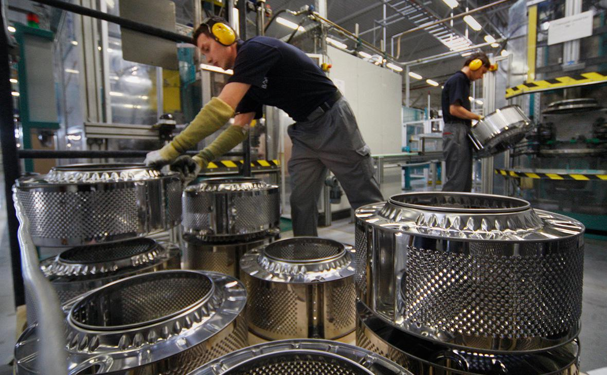

Průmyslová výroba

Průmyslový sektor zahrnující průmyslová odvětví, jako je metalurgie, chemický průmysl a výroba cementu,
je významným zdrojem emisí skleníkových plynů. Továrny a továrny využívají velké množství energie,
obvykle získané z fosilních paliv, což vede k emisím CO2. Některé průmyslové procesy,
například výroba cementu sama o sobě uvolňuje CO2. Za emise je zodpovědný i chemický průmysl
jiné skleníkové plyny, jako jsou plyny obsahující fluorid, které mají velmi vysoký potenciál globálního
oteplování.